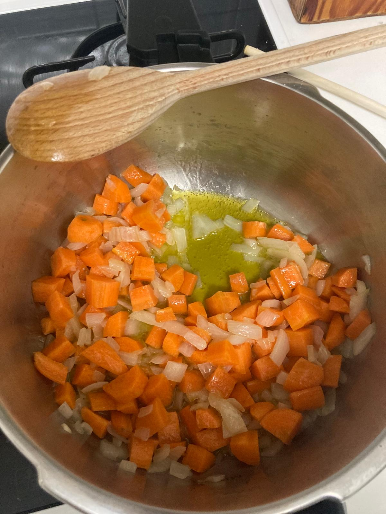
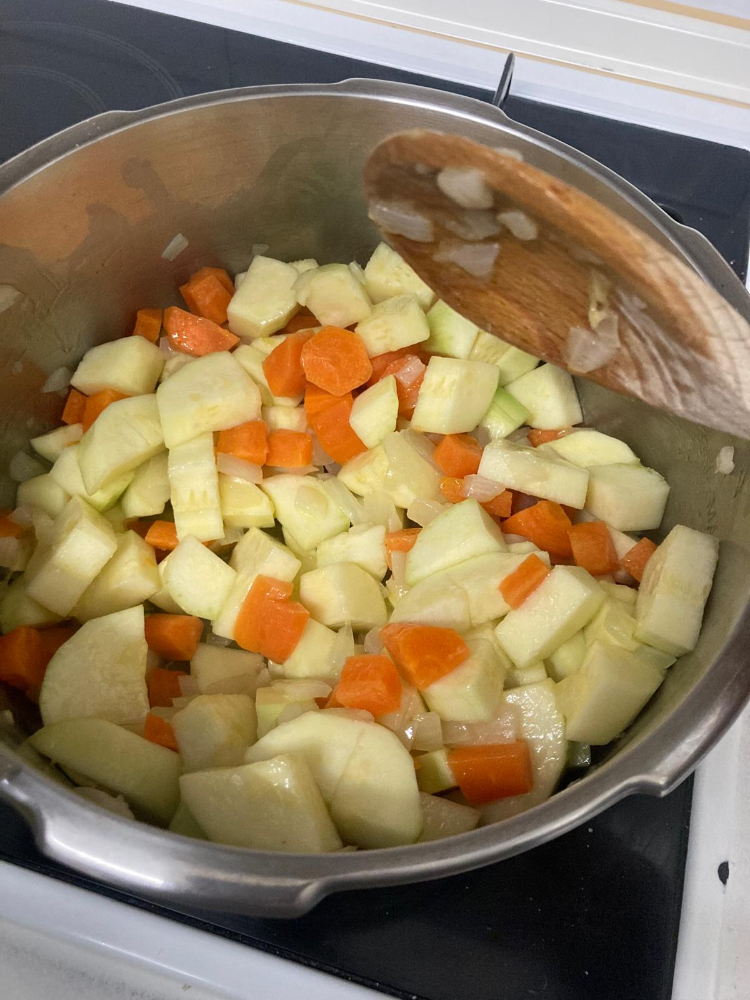
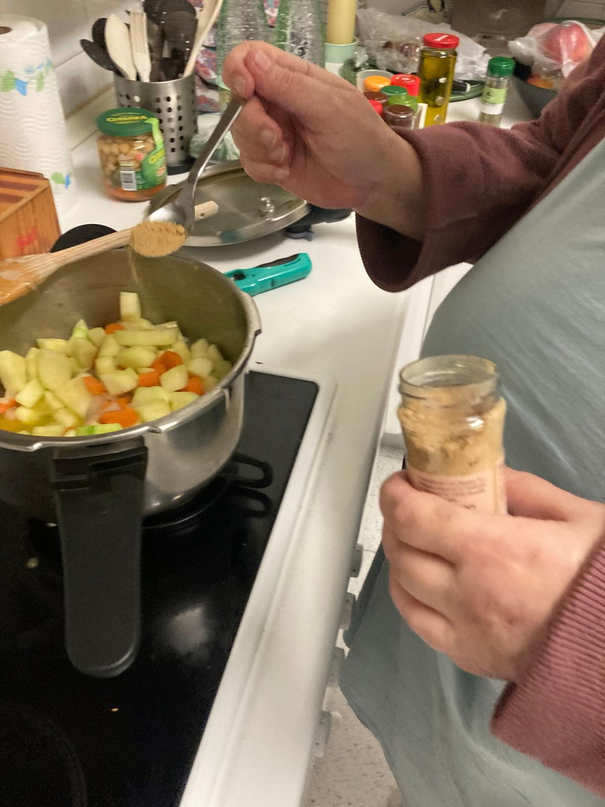
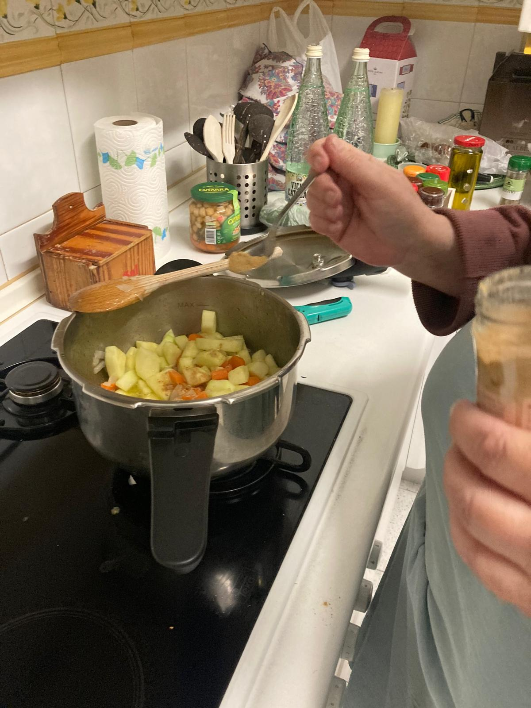
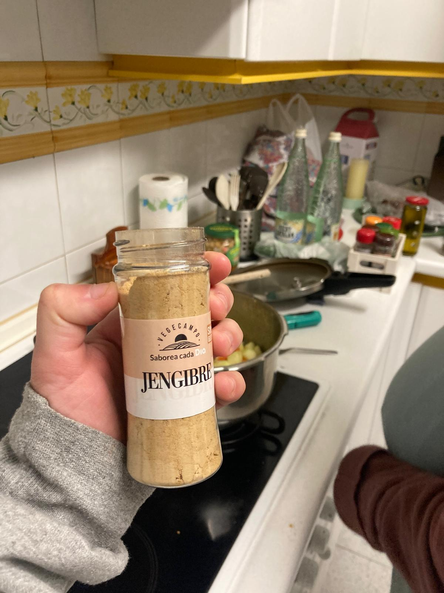
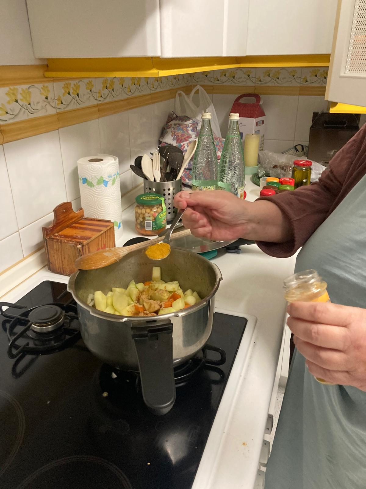
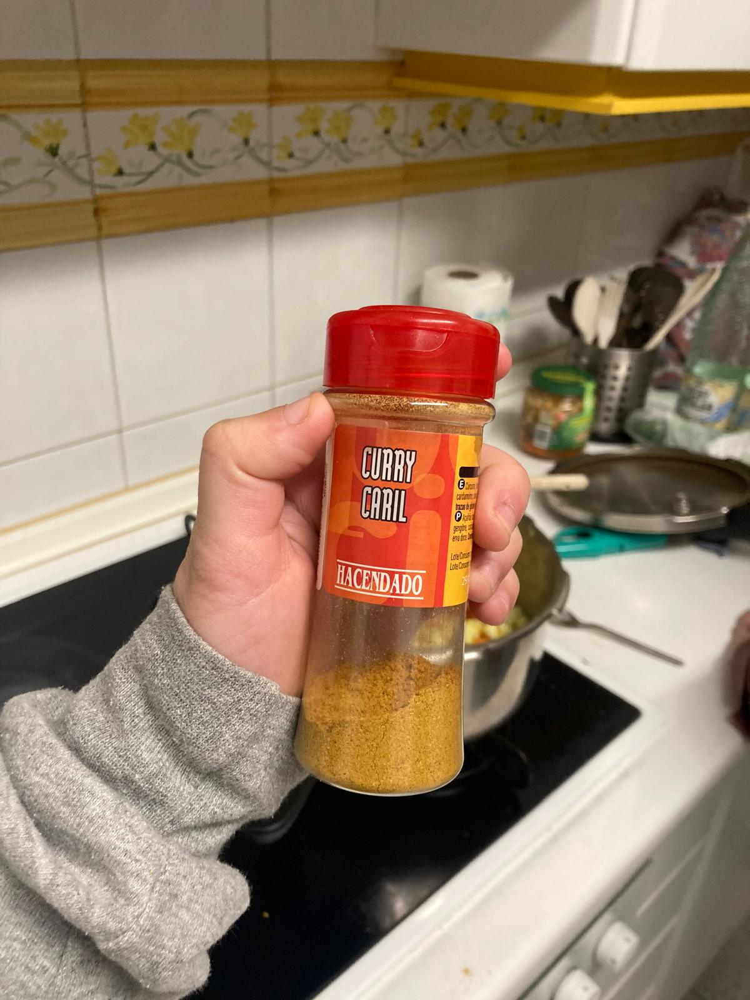
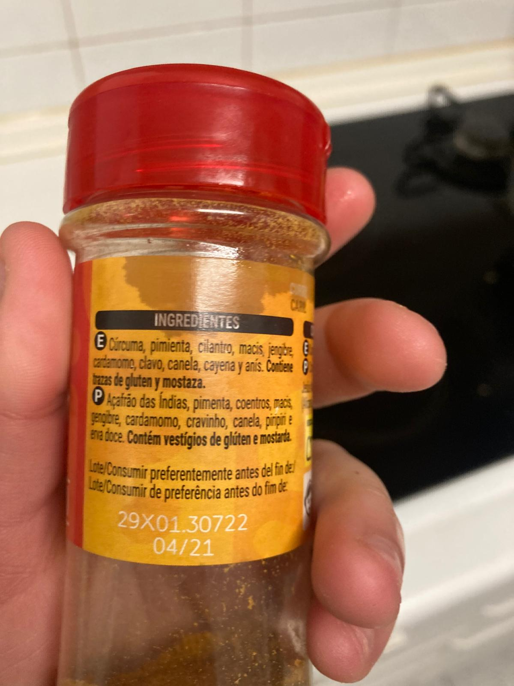
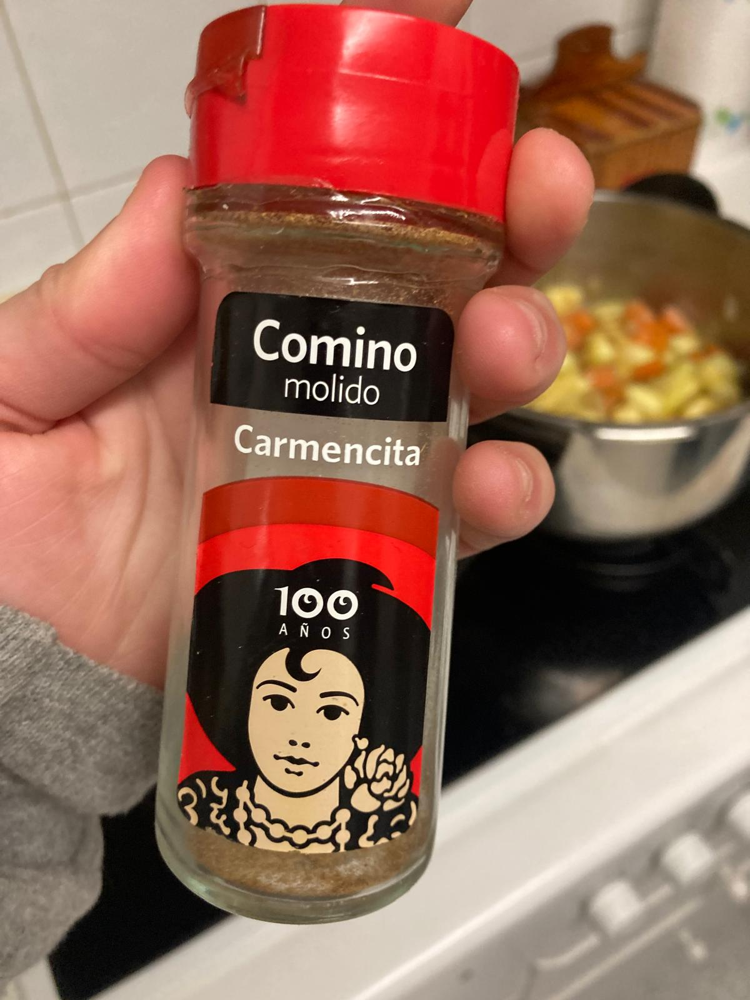

- Lavamos, pelamos y cortamos en trozos las zanahorias, calabacines, y cebolleta. Picamos la mitad de un pimiento verde y el puerro.
- Poner a calentar el fondo de una olla con aceite de oliva. Meter la cebolleta con un poquito de sal. Cuando esté traslúcida, meter la zanahoria y el calabacín con otro poco de sal y remover un rato.
- Cuando la verdura empiece a dorarse, anadimos el jengibre molido, comino, y curry.
- Cubrir las verduras con agua y añadir un puñado y medio de sal.
- Ponemos a fuego alto en la olla exprés hasta que salga humo. Después, bajamos a fuego bajo y lo dejamos 20 minutos.
- Enfriamos la olla hasta que se baje el pitorro, la abrimos, y trituramos con una batidora. Rectificamos de sal si es necesario.
- Servimos caliente.
 
      